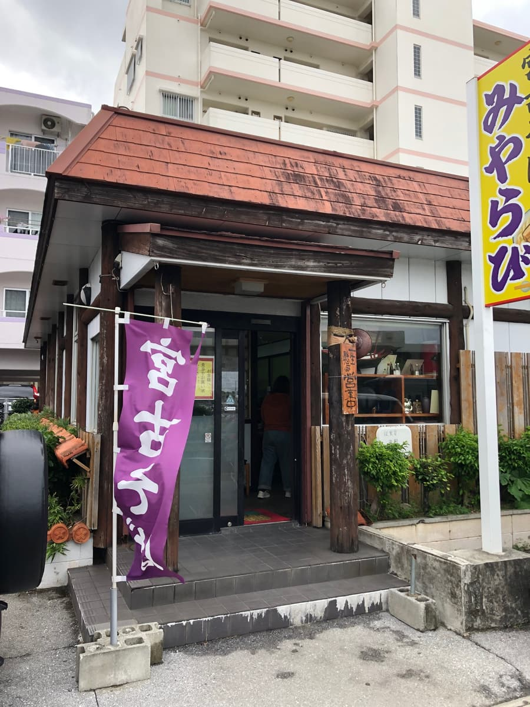
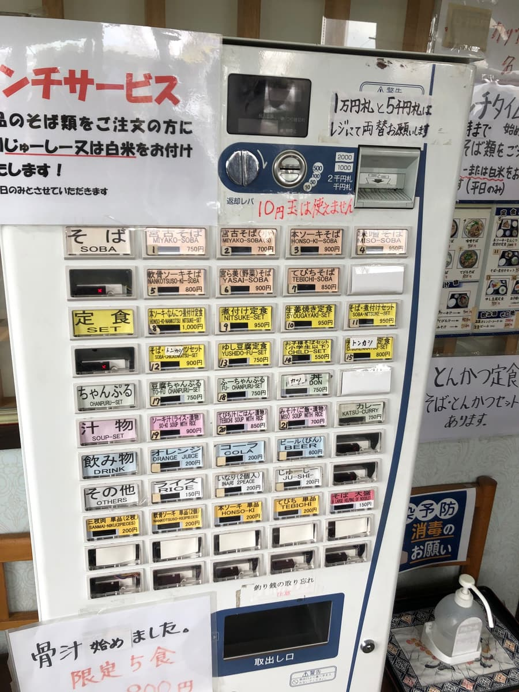
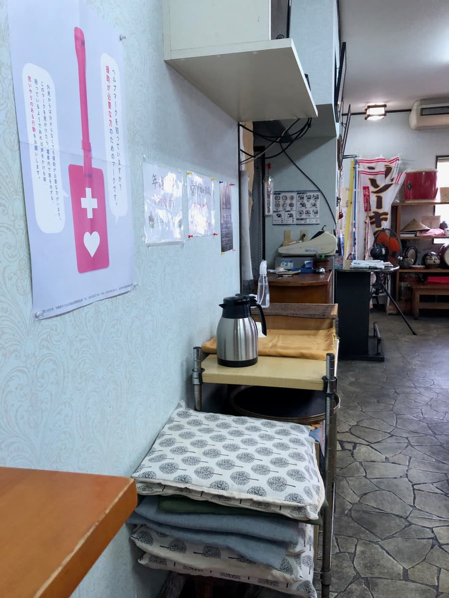
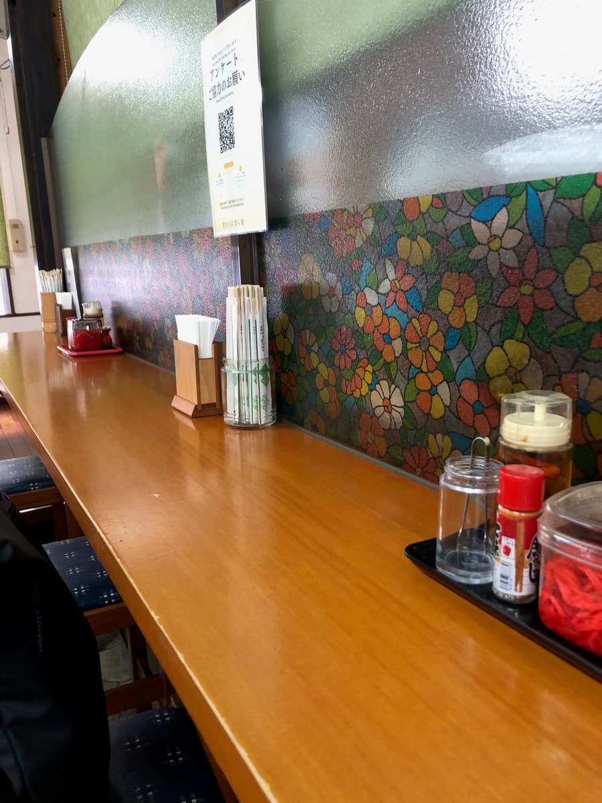
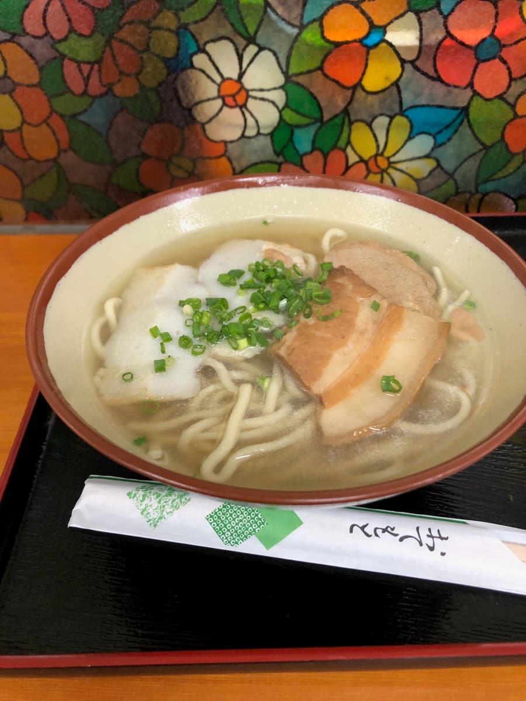
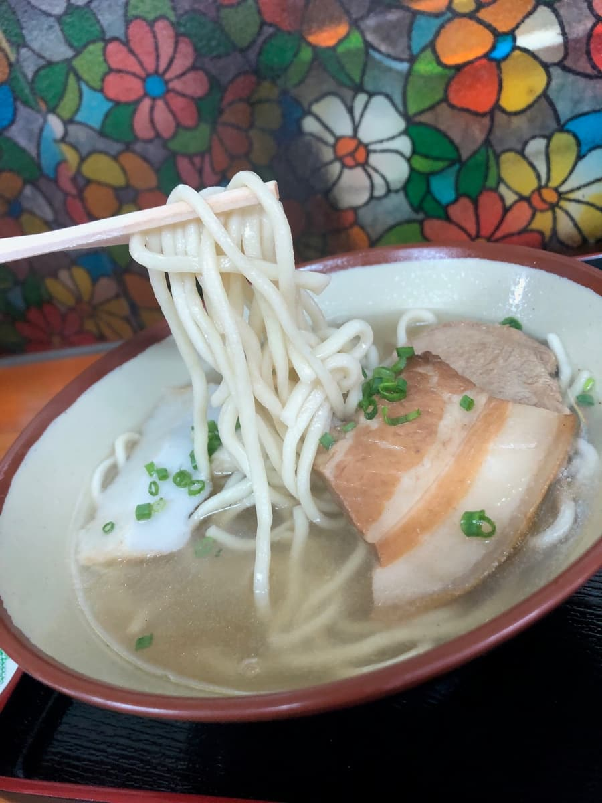

이 글은 AI(Chat GPT o3)로 작성하고 일부 덧붙여 썼습니다😁
2024년 12월에 먹으러 갔습니다😄
나하 공항에서 차로 10분 정도, 구시의 한구석에 덩그러니 나타나는 적갈색 삼각 지붕――그것이 “미야코 소바 미야라비”네요🚗💨. 입구의 나무 기둥에는 세월이 느껴지는 “영업 중” 팻말이 걸려 있고, 보라색 깃발에는 당당하게 흰 글씨로 “미야코 소바”라는 문자. 가슴이 두근거리네요.


문을 열면 바로 식권 발매기. 크고 작은 버튼이 50개 넘게 정렬되어 있고, “10엔 동전은 사용할 수 없습니다”라는 손글씨 메모와 “런치 서비스” 안내가 빼곡하게 붙어 있습니다. 소바는 기본 700엔대부터이고, 세트와 국물 요리, 심지어 참프루(오키나와식 볶음)까지 늘어선 라인업의 폭넓음에 놀라네요😲. 이번에는 가게 이름에도 내건 간판 메뉴 “미야코 소바(750엔)”를 망설임 없이 꾹. 카운터에 식권을 놓자마자 안쪽 주방에서 능숙하게 조리가 시작됩니다.


가게 안 L자형 카운터의 벽 쪽에는 꽃무늬 모자이크풍 유리가 장식되어 있어서, 어딘가 쇼와 레트로한 다방 같은 느낌. 점심때는 만석이 필연이지만 회전이 빨라서, 식권을 건네고 나서 소바가 나오기까지 체감 5분 정도. 여행 중간에 후딱 들르고 싶은 사람에게는 반가운 속도네요⏱️.

자, 눈앞에 나타난 미야코 소바. 맑으면서도 살짝 뽀얀 국물은 돼지뼈 베이스의 순한 향. 고명이 면 아래에 숨어 있는 ‘원조 미야코 스타일’이 아니라, 삼겹살 조림(산마이니쿠)과 살코기(로스)가 당당하게 위에 자리 잡고 있습니다. 연한 초록색 송송 썬 파가 떠 있고, 겉보기에는 소박하면서도 어딘가 늠름한 한 그릇이네요.
먼저 렝게(국물 숟가락)로 한 입. 돼지뼈 베이스네요.

면은 미야코 소바다운 단면이 둥근 가는 스트레이트 면. 탄력은 적당히 약하고 부드러운 편🍜.
삼겹살 조림은 비계와 살코기의 밸런스가 딱 좋고, 한편 살코기는 확실히 씹는 맛이 있음. 둘 다 힘줄 같은 질긴 식감은 있네요😆.
문득 주위를 둘러보니 손님들로 북적이고 있습니다. 공항에 가까운 위치이면서도 관광지 가격으로 치우치지 않고, 현지의 일상에 다가가는 가게――그런 분위기가 가게 안에 가득해서 편안하네요.
평가(9점/15점): 두드러진 화려함은 없지만 “평범하게 맛있다”를 그대로 실천하는, 일상에 다가가는 미야코 소바였습니다. ――그것이 미야라비의 미야코 소바라고 느꼈습니다. 나하시 중심부에서 조금 떨어져 있지만, 렌터카를 반납하기 전의 배 채우기나 공항으로 가는 길의 점심으로 딱. 한 번쯤 어떠신가요✨. 🥢
면: ★★★☆☆（3）
수프: ★★★☆☆（3）
토핑: ★★★☆☆（3）